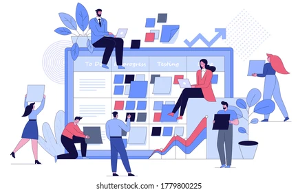
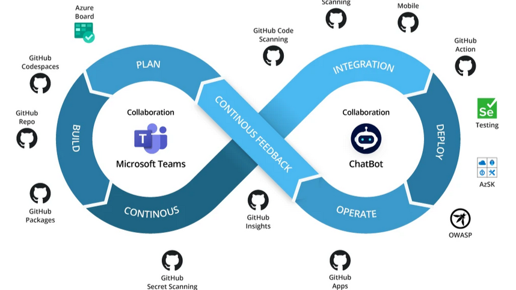
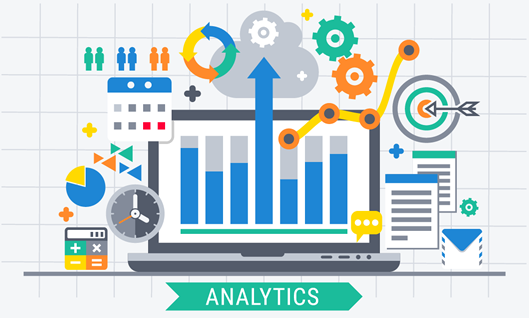
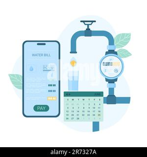

Work · Mobileum

SITE Platform — Reporting & Trace Acceleration
Improved the performance and scalability of Mobileum’s high‑traffic reporting and analytics system. Tackled severe latency issues (reports taking up to 2 minutes) by re‑architecting the data model, introducing SQL caching, and parallelizing backend pipelines, ultimately cutting report generation to under 30 seconds.
Java
Spring Boot
SQL
Caching
- Redesigned core SQL schema (split monolithic table into normalized structures) → faster query execution.
- Introduced dedicated SQL cache mode + dynamic caching → report retrieval times ↓ 40%.
- Reduced average report generation time from 2 minutes → under 30 seconds at peak load.
Work · Mobileum

System Reliability & CI/CD Modernization
Modernized build pipelines and improved overall system reliability by refactoring legacy components, introducing proactive monitoring, and adopting SOLID design principles. These efforts reduced build times, cut downtime, and enhanced deployment confidence.
Maven
CI/CD
Monitoring
Clean Code
Refactoring
DevOps
- Migrated build system from Ant → Maven, reducing CI pipeline build times by 40%.
- Introduced automated alerting/monitoring dashboards → improved incident response by 20%.
- Refactored legacy modules to follow SOLID principles → reduced tech debt by 25%.
Work · Security
Multifactor Authentication — Platform‑wide Security Upgrade
Led the end‑to‑end design and development of a platform‑wide multi‑factor authentication (MFA) and access hardening system for the SITE platform.
JavaSpring SecurityMFA (Email/App)API GatewaySecurity Architecture
- Implemented two MFA methods — email‑based OTP and app‑based authenticator — configurable by admins.
- Built admin‑level configuration: admins decide which users require MFA; users register and manage their MFA devices.
- Delivered end‑to‑end: system architecture, Java/Spring implementation, testing, deployment, and release management.
Work · Development

SmartPhoneExperience Trace
Re-architected the SmartphoneExperience (SX) module of the SITE platform to efficiently
generate execution trees from smartphone testcase traces.
By restructuring the pipeline, adding filters to segment traces into parallel PTCs,
and introducing lazy loading, I significantly reduced latency and improved performance
for the customers.
Java
Spring Boot
Graph/Tree
JSON
Caching
Performance Optimization
- Parsed smartphone testcase traces into a hierarchical execution tree with parent/child edges, timing, and status.
- Introduced filtering to split traces into multiple PTCs (parallel trace components), improving scalability.
- Implemented lazy loading of tree nodes for large traces → reduced latency and improved UI responsiveness.
Internship

Spot Billing App (BWSSB · SAJALA)
Developed during my internship with NIC, this Flutter-based Android app automated water bill generation for each customer, reducing manual effort and ensuring accurate billing.
Flutter
Dart
Web APIs
Android
- Enabled real-time meter reading with instant, on-device bill generation.
- Reduced manual billing errors by 40% and improved accuracy by 30%.
- Cut billing process time by 50% through automation and concurrency handling.
- Designed offline-first functionality to ensure uninterrupted billing in low-network areas.
- Integrated with backend APIs for secure data sync and centralized reporting.
Academic Project

Continuous Assessment Marks Management
Built during my B.Tech at Banasthali Vidyapeeth, this React-based web application automated internal marks submission, ensuring accuracy and reducing faculty workload.
React
HTML
Bootstrap
Web API
- Enabled professors to submit marks digitally for any subject and semester.
- Automated direct submission to admin systems → reduced manual errors by 20%.
- Lowered teacher administrative workload by 80%.
- Designed dashboards for streamlined subject-wise entry and verification.
- Improved transparency and speed of assessment processing across departments.